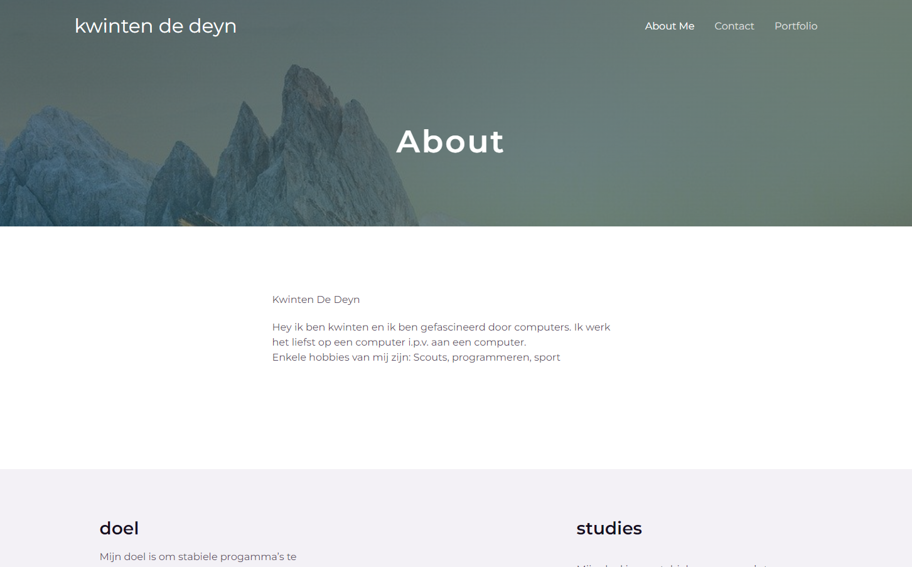

Wordpress site
Wordpress website gemaakt op Odisee
Dit is een website gemaakt met wordpress. De website zelf heeft niet zo veel content maar dat was niet het doel. het doel was om de basis van wordpress te leren.
Je kan ook zelf de website bezoeken op https://wp.kwintendedeyn.ikdoeict.be/
More pictures

Technical information
- wordpress